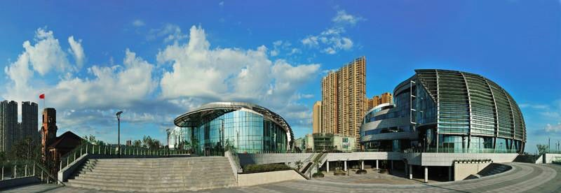

中江塔始建于明万历四十六年(1618年)，清代康熙八年(1669年)续建落成，在老一辈芜湖人口中，他们还常管中江塔叫“宝塔根”。

阁式砖木结构风水宝塔，八角五层，每边长4.1米。塔高43.7米，其中塔刹高10.16米。每层四窗，错置相间，每窗左右各设一灯龛。塔内结构一至二层为壁内折上式，石梯盘绕。三至五层为空筒式，木梯依壁。门窗塔壁，精雕细刻。墙面各边均嵌有砖雕，尤以1～2层圆形欹柱两侧的砖雕雀替最为突出。
1987年经省考古研究所组织维修，恢复了塔的出檐部分。八个角用转角斗拱支承老戗出戗，出檐深远。八个面补间斗拱用两朵支承檐桁出挑，椽子和飞子上钉望板，上覆鸳鸯瓦。修复后的中江塔巍然壮观，登临塔顶，万千景象，尽收眼底。 中江塔堪称为芜湖地域位置的标志。

这座寓意"鱼米之乡"桥塔的设计者是来自同济大学的吴冲教授。位于青弋江和长江交汇口处的临江桥设计为单塔斜拉索桥，主塔高73.5米，呈鱼的形状。设有6层观光平台，游客可乘电梯直上塔顶观光。

最初的灵感就是来自芜湖是一个鱼米之乡。"把芜湖本地的特色融入这座建筑中，于是就设计了这座江边高塔，钢梁是鱼的脊梁，铝合金面板和玻璃幕墙就是鱼鳞。这样的设计是独一无二的，充满着芜湖特色。临江桥临近吉和广场和芜湖市中心中山路步行街，每到夜晚时，临江桥旁的LED彩灯，不停地变换颜色，吸引了许多路人驻足欣赏。美丽的临江桥再与附近的宝塔呼应，美不胜收。

中江塔雄视双江，影映二水，晨曦夕照，塔影长长，朝映浩浩大江，夕移清清弋水，波光塔影，美不胜收。入夜，月华皎皎，渔火点点，月升影移，波荡影晃，伴之涛声铃声，更令人陶然悠然。

1988年，芜湖市人民政府重修中江塔，使之以新的雄资与现代化大厦，多功能防洪墙交相辉映于双江之畔，构成一幅古代文明与现代文明比肩同立的独特的风景画。
古时候，人们把长江的从九江至京口（镇江）一段，称为中江，而芜湖适得其处，故有中江之名；又说古有中江，东通太湖，西流长江，芜湖古地即在中江畔，因而称芜湖为中江，中江塔因此得名。早在东晋、南北朝时期，该处的小塔就成了长江、青弋江两江船只夜航的灯塔，也是船只进入芜湖的航标。
▲两幅图上分别有"PAGODA"字样，在英语中，它是"宝塔的意思"，因为当时芜湖在中国半殖民地时期是长江沿岸的重要贸易口岸，所以现存有一些珍贵的明信片。
在我外公的家中，同样有一张类似的明信片。时间匆匆而逝，就连外公也想不起来这张明信片背后的故事……
芜湖大剧院地处芜湖市镜湖区北京西路最西端，原址八号码头，其南为长约500米的繁华商业步行街，其北为城市滨江绿地公园因此芜湖大剧院将成为城市轴线与长江交汇的重要点。剧院从外形上，立意于一组开启的贝壳，饱满而丰盈，以贝孕育珍珠来寓意芜湖城市依江发展的勃勃生机和璀璨前景。剧院周围绿植环绕，文化休闲广场令人与自然和谐共融。老海关、中江塔、太古轮船公司旧址等景点更添人文情怀。

现今的滨江北路，从陶沟至13号码头，人们总习惯称为"太古码头"，它是半封建半殖民地的产物。1867年（光绪二年）《中英烟台条约》签定之后，芜湖被列为四大通商口岸之一，帝国主义势力不断侵入。1905年，芜湖道童清璋与英领事柯伟良议定：划拨江岸路陶沟至弋矶山段为通商租界区，强行将原舟船，排筏的停靠点移到河南芦花荡，并勒碑晓谕。从此英、美、德、日商船麋集芜湖，修筑码头，分占港口。其中，拥有12艘轮船的太古公司占得的租界最大。租界是外国人的乐园，中国人的禁区。那些头戴红边警帽"红头阿三"在码头、马路上耀武扬威，横行霸道，动辄殴打码头工人、人力车工人。解放后，芜湖港回到了人民的手中，但"太古码头"却成了往日的屈辱和辛酸的地名。

老芜湖海关位于芜湖滨江公园国家3A级风景区内，时代为清-民国。老芜湖海关为旧中国四十处海关之一，这是根据《中英烟台条约》规定，于1876年开始建立的，1877年2月18日设立芜湖海关，定为三等海关，4月1日正式开关，专征轮船装运的进出口货物税款，由英领事署总税务司管理关务，兼管港口、航政、代办邮政、气象等业务，还负责稽查鸦片走私。芜湖海关通用英语。税务司受命于外籍总税务司，总税务司办公地点在范罗山领事署内。历任税务司都为外籍人员，掌管海关人员的招募、调遣、晋升、撤换等。首任税务司是德国籍吴德禄，首任税务关道刘传缜。
在芜湖老海关建筑的一旁，可以看见一座雕塑，雕刻着两位芜湖名人。他们是潘赞化和张玉良。
潘赞化毕业于日本早稻田大学，同盟会会员，民国元年（1912年）任芜湖海关监督，1913年与张玉良结成伉俪，张玉良改名为潘玉良。潘玉良出身青楼，毕业于上海美术专科学校和法国巴黎国立美术学院，任中央大学等校教授。1937年旅居法国，获法国多尔烈奖，意大利政府金奖等多项奖项，是国际著名画家和雕塑家。
随着社会的进步，时代的变迁，老海关已成为国家文物保护的对象，而这个地方也成为了芜湖滨江上靓丽的一道风景线。只要是晴天，这里都会有人们成群结队地在此拍照留念。
一座教堂，堪称东西方文化结合的建筑艺术经典。
一座教堂，承载了一段中西方文化交流的典范。
一座教堂，一部仍将继续的凝固历史。
她，就是芜湖天主教教堂。
芜湖天主教堂，位于安徽省芜湖市镜湖区吉和街28号，1887年由法国人设计监造，教堂为砖木石混结构。离芜湖天主教堂不远的就有原芜湖海关大楼。近代芜湖海关是安徽省第一座开埠海关，由英国殖民者统治近半个世纪。此外，芜湖市内的各种近代建筑都得到了完好的保护，有的已开发成旅游景点。
教堂建筑面积1300平方米，是整个江南教区（苏皖两省）上海以外规模最大的教堂，座东朝西，背山面江，堂身长39米，一对钟楼高29米，中间是5米高的汉白玉耶稣像。教堂建成以后成为江南教区继上海以后的第二传教中心，号称华东第二天主堂（第一为上海徐家汇圣伊纳爵主教座堂）。1921年成为天主教安徽教区的主教座堂。1930年分出去安庆教区、蚌埠教区后，这里继续作为芜湖教区的主教座堂，由西班牙耶稣会接管。
值得一提的是，近年，在天主教堂的背后新建了一个“中国雨耕山酒文化产业园”的项目，雨耕山1887酒文化产业园是芜湖市委、市政府为完善文化产业布局，打造欢乐城市，精心规划的以酒文化为主题的产业园。园区依托西洋建筑和地下人防空间，立志成为业内规模最大、地段最好、综合性最强、全国一流的酒文化产业园区。
下面，请跟随我，来回顾这一段悠长的历史……
1876年，清政府与英公使签订《中英烟台条约》，芜湖被辟为通商口岸，西方文化登陆芜湖。因此，城市里留下了如天主教堂、海关大楼、英驻芜领事官邸各种不同风格的历史建筑，大多像珍珠一样撒在长江之畔。这些沿江老建筑见证了芜湖作为长江巨埠的崛起。近代以来，芜湖的商业，是一种小商小贩吆喝来的繁荣；改革开放以来，芜湖又被国务院批准为沿江开放城市，逐渐成为老字号继续发扬光大，现代商业"旗舰"不断"抢滩"的金色大陆。
坐落在青山街的雨耕山文化创意产业园，是一座结合了西洋建筑和宗教文化，实现中西化交流和商旅文化的互动，并以酒文化为特色的园区。园内保留了始建于1887年的原英国领事馆官邸、华东第二大天主教堂两座全国文保建筑和神甫楼内思高级工业职业学校旧址等省级文保建筑，总面积20000余平方米，是省内现存规模最大的西洋近代建筑群。
英驻芜领事官邸里的墙体很是美观，小砖块间隔分布，中间利用独特的勾缝技术连接，整体显得精细而厚实。门旁边的墙上设置了外门栓。门打开后，插销往墙上一挂，门就固定住了，很是神奇。
100多年后，雨耕山通过邀请西班牙塞纳齐建筑设计院打造了中西合璧世界风范的文化景观园区。园区在整体布局上，以文保建筑，即原领事官邸和内思楼为中心，向两侧延伸，，形成三大主题建筑群落——
毕加索广场
正如毕加索的画作风格一样，呈不规则多边形，两边建筑外立面都表现出了几何形状中边框和线条的古典元素。在广场左右两边的商业建筑中，又云集了诸如咖啡陪你、卡贝小镇等现代感十足的知名商业品牌。置身于此，很容易就能嗅到充满小资情调的年轻、时尚、现代的气息，是餐饮、休闲、娱乐和文化体验的好去处。
西班牙广场
它位于园区的中部核心地带，周边伴以神甫楼、天主教堂、英国领事馆官邸旧址为主的西洋建筑群。有趣的是，这样一个开放式的广场，在较高处建有标志性建筑，在较低处设有人员休息区，高度的落差通过楼梯来缓和，宁静隐逸、十分奇妙。整个广场以红酒元素为核心灵魂，充满浓郁的西欧风情，是高端城市品位的社交秀场。
马约广场
马约广场位于园区的西南端，面积3000余平方米，广场下设停车场。广场周边以酒文化产业商务办公为主。是集聚产业能量，激发产业活力，推动产业发展，展示产业形象的产业文化高地。
如今的内思楼已经添加了消防设备和外墙垂直电梯。我们循着过道里一面接着一面的黑板往里走，感受着岁月沉淀的文化气息。上了楼我们发现，除了教室，还有一个礼堂，里面的座椅和舞台都是原汁原味，保存很好。"以后这里会进行一些舞台剧的表演"，园区的一位负责人告诉我们，雨耕山园区独特的地理优势和建筑面貌，将芜湖1876年作为对外通商口岸衍生的码头文化、宗教文化、西方文化、本地文化与城市文化相融。
走到了学校的顶楼阳台，从西看，天主堂、神甫楼和英驻芜领事官邸连成一体，伴着周围高高低低的建筑和热闹的人流车流，美如画卷。如今，百年已逝，昔日的英国租界已然不复存在，在时光的倒影之间，只留下富含西方韵味的古建筑，静静地见证着当时的那段历史风云。
随着时代的变迁，改革开放步伐的迈进，芜湖正逐步从具有厚重文化底蕴的鸠兹古城走向一座自主创新的现代化都市。没有历史就没有未来，历史不能只停留记载中。芜湖西洋文化长廊正是一个展现、宣扬芜湖西洋文化跌宕、发展的特色载体，在这里我们可以穿越千年历史，触摸百年西洋，让历史从厚重的史册中变成看得见、摸得着的、我们当代人的记忆。近处，有着华丽欧式风格的西洋老建筑，吸引了许多摄影爱好者，楼下打扮时尚的红男绿女，不由叫人会心一笑：那些华丽缤纷的影像中，一定会默默诉说着昔日的厚重与沧桑。


 每个城市都有自己的风格、自己的个性，那种有味道的城市才会让人着迷。所谓城市的味道，就是这座城市有一种令人心动、令人亲近的感觉，有一种吸引人们去欣赏、去感受、去体验的东西，有一些值得长久留存于记忆，经常追忆回味的东西。
每个城市都有自己的风格、自己的个性，那种有味道的城市才会让人着迷。所谓城市的味道，就是这座城市有一种令人心动、令人亲近的感觉，有一种吸引人们去欣赏、去感受、去体验的东西，有一些值得长久留存于记忆，经常追忆回味的东西。